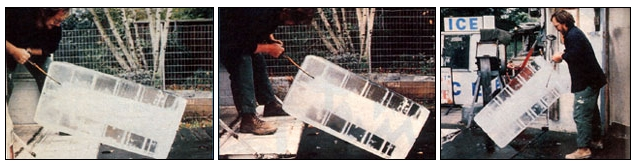

Run A Rural Ice Delivery Service
July/August 1982
You can "keep your cool" in the heat of summer with a refreshingly profitable home business!
by William L. Stewart
In 1964, after many years of factory work, my 62-year-old father retired . . . and immediately began to look for a way to make some extra money. And, since Dad had once been a commercial fisherman and crabber, we decided to break out his long unused nets and try fishing for our fortunes. However, when we brought our first day's catch home and set about getting it ready for sale, we suddenly realized that-because the town's icehouse had closed some years before-there was no block ice available within a 20-mile radius!
Well, we quickly reasoned that if we couldn't get ice easily, then neither could anyone else in our community. Fortunately, Dad and I already had a tiny cement building that we knew stayed pretty cool-in fact, we'd used it for cold-storing seafood-so we drove to the nearest operating icehouse, bought our first pickup load of frozen blocks, and trucked it back home. Voila! We were icemen . . . and although our original plan was to concentrate our efforts on supplying the area's sport and commercial anglers, we soon learned that our small operation could also do a brisk business servicing restaurants, construction projects, factories, and dozens of other customers that the nearest big-city companies didn't consider worthwhile to handle.
In other words, you're likely to find plenty of demand for ice, too, no matter where you live in this country. And you can start a simple delivery service-that is, you'd be buying ice from a large commercial plant and selling it, the same- day, to route customers-with little more than a pickup or trailer, some plastic holding tubs, a pair of tongs, and a supply of business cards!
I know a man in northern Pennsylvania, in fact, who started just that sort of shoestring operation several years ago. By keeping his costs to a minimum (he takes orders in advance and picks up only the amount of ice he knows he'll sell during any given day), the fellow has been able to earn a very good living indeed. Currently, he delivers 70 or so 50-pound containers of ice a day . . . and the three hours of work required to do that job nets him a hefty $150 to $200 daily!
A BACKYARD ICEHOUSE
Although having your own cold-storage facility at home isn't a requirement for getting started in the ice business, there are advantages to owning such a building: It does-for example-allow you to keep an inventory of your product, and that can cut out a lot of costly trips to your supplier (plus eliminate a good bit of loading and unload ing) . . . and with a little effort, you can build up a good list of regular walk-in customers as well as (or instead of, if you wish) a delivery route. So if you have the time and money to devote to the project, you should seriously consider buying or building a backyard icehouse.
I've found that prefab models, which are usually made of sheet metal, range in cost from expensive (at least $1,500 for a 6' X 6' unit) to very expensive (up to $5,000 for a 10' X 10' cooler) . . . and although the price does include delivery and setup, refrigeration compressors are extra. What's more, nearly all the readymades I've seen are designed strictly for interior use-in a grocery store's stockroom, for instance-so if you don't have a suitable place to install such a unit, you'd probably have to add both insulation and exterior weatherproofing before you could use it outside.
Therefore, I honestly believe you'll get more value for your money by building your own icehouse. And you'll not only save cash by doing so, but also be able to design, equip, and insulate the structure as you see fit. In addition, there's a certain amount of satisfaction in adding a permanent asset to your business with your own two hands.
AN INSIDE TIP
I can give you the secret of successful icehouse construction in just two words: Plan ahead. First, check out your local building and zoning codes, just to be sure that what you have in mind is legal, and to see whether you'll be expected to meet any special requirements.
Now, consider three factors before drawing up a set of plans: the size of the ice blocks produced by your supplier, the capacity of your truck or trailer, and the volume of business you anticipate doing (both now and in the future). These points will help you approximate the floor space your building should have.
For example, our shed is truly tiny . . . only 6' X 7' on the inside, providing us with a scant 42 square feet of storage area. We buy our ice in 300-pound blocks that measure roughly 1' X 2' X 4' each, and we stand them on end so that each cake occupies only two square feet of floor. The cooler's total capacity, then, is 21 cakes or approximately 6,300 pounds.
During our first few years-when we were using our pickup to haul ice-we could fit only seven of those 300-pounders in the truck's bed . . . so we always bought a full load, never a partial one, and knew that our icehouse held exactly three trips' worth. Later, however, when our business began to grow, we bought a stake-body truck that carries 24 blocks (about 7,200 pounds) . . . which is more than our little cooler can hold. Therefore, to replenish our inventory, we must either wait until the stock is nearly sold out to be able to accommodate close to a full load, or make frequent (and expensive) half-load trips to and from the supplier.
If our icehouse were just two feet deeper, we could hold an additional seven blocks . . . and our problems would be over! You can see, then, just how important it is to plan before you build. I'd say that-in general-a small icehouse should hold a minimum of 9,000 pounds and a maximum of 15,000 . . . which, given the dimensions of the blocks sold around here, would require roughly 60 to 100 square feet of floor space. (Remember, though, that the per-unit size and weight of bulk ice in your area may be different.)
While you're still in the planning stages, you may as well also talk with a heating and cooling contractor about the possibility of installing a refrigeration compressor in your icehouse. Now you don't necessarily need that equipment right away, but you might want to add it as your operation grows.
In our early days, before we bought any cooling apparatus, we could expect-say-15 blocks of ice to melt to about three-fourths of their original size within three or four days. That rate of attrition wasn't intolerable-in fact, you can expect some loss even when using refrigeration equipment-but within a year or so our business had grown to the point where we could afford to buy a 1-HP conditioner (today's price for a good-quality unit of the same size, new, would be about $400 to $600 ... while used models can be had for about $150 to $175). Later, we switched to two 3/4-HP conditioners (current prices: $300-$500 new, $100-$150 used) in order to be able to keep one running while the other was turned off and defrosting. This way, we can maintain a consistent temperature of 28° to 32°F in our cooler.
At any rate, anticipate such needs before you build, so that you can at least allow space for whatever equipment you might eventually install. Remember, too, to give your icehouse enough inside height to permit easy standing room . . . but no more (a 6-1/2-foot ceiling is about right in most cases). Also, plan to install sufficient lighting (one protected standard bulb is usually enough).
CONSTRUCTION FEATURES
Our icehouse is made of concrete block, with one walk-in entrance and no windows. The 10"-deep, 24"-wide footings and the 4 "- to 5 "-thick slab floor-which slopes gradually to a central drain that's connected to drainage tiles-were poured at the same time. The walls consist of ten courses of 8 "wide blocks, lined with 3-1/2"-thick fiberglass batts-installed between 16 "-on-center studs and covered by 1/4" exterior-grade plywood-over which we've also applied 1 " rigid-board insulation and a final sheathing of plywood.
If I had it to do all over again, though, I'd insulate the entire structure more thoroughly . . . by adding material under the ceiling, inside the walls, and beneath the slab floor. If the building inspector would allow it, I'd even bank the outside of the icehouse with earth (after putting down an appropriate vapor barrier) right up to the roof!
In order to make a raised floor that would help us keep our product well-drained (ice standing in water melts especially quickly), we placed pressure-treated 2 X 4's on the cement slab, and then laid a grid of 2 X 6's across those boards, leaving a 1/4" gap between the slats. (This arrangement also simplifies the task of cleaning the ice and the floor.)
Our shed has a standard 36" door, to which we've added a makeshift "sandwich" of insulation (it consists of a layer of 1 " Styrofoam boards topped with 3" fiberglass batts). The whole affair is covered with a sheet of white canvas cut to size and stapled down to protect the inner stuffing. In addition, we nailed a second panel of similar cloth to the inside top of the door frame. The fabric hangs loose, nearly to the floor, and serves as an elementary air lock when the door is open for long periods.
The storage house's roof is of typical shallow-pitch shed design, constructed of 2 X 6's and covered with tar paper. If you follow my advice, though, and make your structure larger than ours, you should probably use more substantial roofing lumber . . . 2 X 8's at least, or-if the price is within your budget-2 X 10's or even 2 X 12's. The wider the beams, you see, the more insulation you'll be able to install, and-despite the higher initial cost of materials-that will result in bigger energy savings. In any case, do build your roof carefully! Ours was plagued by minor leaks, and we eventually had to cover the entire surface with black tar . . . which soaks up summer's heat like a solar sponge and, as a result, increases our cooling costs. (It'd probably be a good idea to finish your entire structure off with a couple of coats of good old sun-reflecting white paint!)
ACCESSORIES AND OPTIONS
If you're hoping to keep your equipment purchases to a minimum, you should be able to get by-in the beginning, at least-with ice picks and tongs . . . which you can generally obtain at flea markets for just a few dollars apiece.
You'll probably find it useful to place-just outside your cooler's door-a large sheet of plywood, with drain holes drilled in it, to keep your product off the ground while you're loading or unloading. A nearby water hookup will also come in handy when you have to wash off ice that's to be used in drinks and water coolers. And a 2 X 4 or 2 X 6 plank, fastened on the outside wall near the door, can be used (once you've driven some heavy nails part way into it) to hang tongs and jackets and such.
Before too long, you might want to invest in an ice crusher, too. We purchased our first model for $150 (you can pay up to $400 or more today) from a fellow who'd worked in our town's former icehouse. It was adequate for a while, but later-when clients began calling for larger quantities-we bought a bigger machine. Our present contrivance is a plate-steel, electric-motor-driven affair with heavy metal teeth set in a revolving drum. It'll munch 50 pounds of ice in about 30 seconds and hasn't needed a single repair in ten years of hard use. The device stands on steel legs bolted to a platform made of 1/2" exterior-grade plywood (again, it's been drilled to permit drainage) . . . which, in turn, is nailed to large railroad ties to help keep the assembly stable.
We quickly discovered that most people prefer to buy small quantities of crushed ice already bagged-rather than bring and fill their own containers-so we sent away to our local equipment company for some paper ice pouches in 10- and 25-pound sizes. However, although we did use these packets for a number of years, they tended to freeze together, and eventually-for lack of a better alternative-we switched to plastic sacks . . . which are slightly more expensive, but less troublesome.
In the beginning, Dad and I simply used an old food freezer to store our packaged ice, but-again, as business got better-we eventually purchased a bag vendor: one of the large cooled bins often seen in front of convenience stores. Thanks to our increased storage capacity, we can do almost all our crushing and bagging in the evening when the air is cooler and our surroundings are less hectic.
I want to stress once more that such items as crushers and bag freezers are not at all necessary for starting an ice service . . . they're improvements that can be added later. Indeed, because it is possible to begin your business without the extras, you can take your time shopping around for good used equipment and probably save a lot of money as a result.
HAULING AND HANDLING ICE
Anyone who's starting on a bootstrap will probably want to know how to turn a pickup into an ice truck. Well, the conversion is easy: Just lay plywood in the bed to prevent ice from freezing into the grooves . . . and you're ready to load.
The chunks should be placed in the truck on their long, narrow edges and braced in on the sides with large wooden blocks (put wedges at the ends, too, if the load doesn't butt firmly up against the tailgate). This procedure prevents any ice from sliding and cracking other cakes, and also keeps the cargo-and the truck itself-more stable and easier to control.
Once everything's in place, always cover the ice with a tarp and weigh the cover down (with boards or whatever). The sheet will keep the sun off your frozen merchandise and-more important-protect the ice from the melting force of the wind. At first, in fact, regardless of how carefully you cover the cakes, air coming through cracks and gaps in the truck body will cut into them. These spaces can-and should-be closed up, using any standard sealant or caulking material.
By this time you're probably wondering just how, exactly, an ordinary non-superhuman manages to get a 300-pound block of cold, slippery ice from ground level to truck bed . . . or vice versa?
Well, we now have the luxury of a hydraulic lift gate for our big stake-body rig, but when we started out, we simply manhandled our way through the problem. Our supplier-who, of course, had heavy-duty loading equipment-helped us to get the blocks onto our pickup . . . but taking them off was another matter. During the first year, we'd simply grab hold of a cake with our tongs, slide the ponderous bulk on its side to the tailgate, and-with our fingers crossed and muscles straining-ease the chunk over the edge and onto a plywood board.
Then, after a summer of sore backs and almost-squished toes, we finally got smart and built a ramp out of scrap lumber. The spinesaver took only about an hour to put together, and made the job of unloading not only easier, but faster and safer.
To build the slide, we first considered the width of our ice (approximately 12 ") and decided that our ramp would have to be 14" wide to accommodate any slightly oversized pieces. We placed two 2 X 6's flat on the ground, parallel to each other and 14 inches apart at the outside edges (which left a 3inch gap between the slats . . . all the better, since less wood in contact with the ice means less friction and easier sliding). The ends of the planks were beveled at a pitch of about 1/4 inch . . . with the bevels on the same side of each board.
Then we cut 2 X 4's into 14" lengths and used the pieces as crossmembers, nailing one of them at right angles to the parallel 2 X 6's every 15 inches or so, ladderlike. Finally, 1 X 3's were nailed horizontally along the outside of the 2 X 6 planks as side rails to prevent ice from slipping off the ramp.
Ordinary butt-type hinges-one for each 2 X 6-were then screwed into one end of the ramp at the bevels, with the attached side of each hinge countersunk into the wood and the other side hanging free. If you have an old-style pickup with a tailgate that'll flop down when you detach the chains that hold it, you can simply slip the loose panels of the hinges into the gap between the gate and the bed, and your ramp will be ready to use. And if you own a newer-style vehicle with a tailgate that won't drop fully, it's an easy matter to drill holes in the gate that align with those in the hinges, and insert bolts to secure the ramp in place.
In either case, with the other end of the slide board positioned in the doorway of your icehouse, you'll be able to grab a block with your tongs . . . guide the monolith down the plank . . . set it up on end . . . and drag it into the cooler.
And, surprisingly enough, the process of setting a cake of ice up on end or down on its side is relatively easy once you learn how . . . there's more skill involved than strength. (My father, at age 80, can unload a truck himself with very little difficulty.) Unfortunately, the technique isn't easily described . . . you really have to see a demonstration, rather than read instructions. My advice, therefore, is to ask your supplier to show you the finer points of managing the blocks when you pick up your first load.
Finally-and perhaps most important-always take great pains to keep your merchandise absolutely clean. In many areas, ice is legally classified as a food item. But regardless of whether that's true in your region, you should be extra careful to keep your product free of dirt and other contaminants . . . particularly if you're delivering to restaurants or other places where the ice will come in direct contact with drinks or edibles! Wash the blocks thoroughly with water, and transport your orders in plastic tubs or other vessels that are easy to clean and won't corrode. The containers must be kept well scrubbed and stored in a sanitary place when not in use, too . . . and should never be put to any purpose other than carrying food-quality ice.
You'll also want to make every effort to keep all your other equipment-such as tongs and picks-as dirt- and rust-free as possible. We've always placed a lot of emphasis on this aspect of our operation. Consequently, we're often complimented on the clear, clean ice we sell . . . and our good reputation keeps those customers coming back!
Of course, when you're just starting out, you're not going to be nearly as concerned with promoting return business as you are with simply getting your first clients . . . so here are a few tips to help you out.
PROSPECTING FOR CUSTOMERS
There's no way around it: You're going to have to get out there and sell your service. Nobody's going to buy ice from you if people don't know your company exists, so hop in your truck and hit the road!
First, stop and make a sales pitch at every local diner, restaurant, factory, bar, and hospital .. . and any other place in your general driving area where drinks or water are served. Even businesses that don't actually need or sell ice themselves, but whose customers might want the product, should be on your visiting list. Simply posting small signs in liquor stores and tackle shops, for example, will often bring in a steady supply of clients. Area farmers may also need ice for shipping their produce . . . so you might try placing a small ad in the local paper or farm journal (a notice at the grange hall or feed store can work wonders, too). Furthermore, don't overlook firehouses, churches, and other places where group socials or cookouts are held during the summer. And county fairs and carnivals can be important temporary sources of income, so check them out as well.
Any construction site near you might also be worth looking into. A few years back, for example, a giant shopping mall was built about 40 miles from here, and the project employed almost 4,000 workers. An icehouse in the area brought them 6,000 pounds a day, six days a week, for a profit of $6,000 a month over the course of the one summer that work was in progress!
Factories can be fruitful places to sell, too. A few years back a glass plant in our town was plagued by constant ice-machine breakdowns, so the folks there ended up ordering from us instead. They never bought less than 2,500 pounds at a time, and they usually needed it three or four times a week! (Your ice can mean a lot to hardworking people. One summer, just as we drove up to a factory in our truck, the employees were walking out on strike because they didn't have cold drinking water. Everyone was mighty happy to see us that day . . . in fact, the foreman had his men unload for us.)
If you don't sell every prospect right away, don't be discouraged. Just keep taking any opportunity to pass out your business cards or notes stating your hours and phone number and the various forms of ice (such as block, crushed, bagged, or cubes) you offer. I suggest that you do not include specific prices on your cards and flyers, though. After all, you may need a little bargaining room when negotiating a potential sale . . . and besides, inflation can put a printed price schedule out of date almost overnight.
Even though many businesses may turn you down initially, there's a good chance that you'll hear from at least some of them sooner or later. For one thing, with the frequency of icemachine failures in any given summer, you're likely to get several "emergency" calls before the season is over. And if those customers receive good service from you, they may well decide that dealing with your firm is the best way to go after all.
Of course, you can drum up business without making personal visits. To lure in more customers, we've erected several signs-handpainted on 3' X 4' sheets of plywood, giving our phone number and brief directions to our icehouse-along the major roads leading to our place. We nailed the placards to fenceposts and telephone poles (after getting permission from the landowners, of course), and they've produced a sizable number of orders for us. Before you put up any boards, though, do check your local and state laws to see whether such advertising is allowed or a permit required. (We have to pay the state $2.00 per sign per year.)
PRICES AND PROFITS
The prices you charge for your ice should be based on several factors . . . including your operating costs, of course, but also taking into consideration such variables as the distance you have to drive to deliver any given order, the kinds and quantity of ice purchased, the frequency of business from each client (certainly a one-time customer shouldn't get the same low rate as a regular route buyer) . . . and any special problems presented by the job (if, for instance, you have to climb several flights of stairs to make a delivery).
In general, we pay our supplier an average of 1-1/2 cents per pound or $4.50 per cake . . . and charge our customers between 6 cents and 8 cents a pound. Blocks that are purchased whole at our icehouse are the least expensive, of course . . . whereas a delivery of 200 pounds of crushed ice to a hotel 20 miles away would be charged at our highest rate.
The secret to making a good profit, of course-and to keeping your retail rates competitive-is to trim your own purchasing costs as much as possible. Don't be afraid, then, to dicker a little with your supplier. If you can, work out a quantity contract to get the best possible wholesale price. (Incidentally, always be sure to specify that you want precut, or scored, blocks . . . cakes that are machine-notched so that you can easily split them into 25- or 50-pound units.) In many cases you can get a better rate from your dealer by paying cash and by loading your own truck. Remember, even if you end up paying only a quarter or so less per cake, you'll come out way ahead over the months and years.
THE LAW AND YOU
Every business has to deal, from time to time, with government agencies . . . and an ice service is no exception. Before you build your icehouse, or so much as buy your first load of frozen blocks, take a trip to your town hall or county seat and check into local and state ordinances: zoning restrictions, building codes, licensing requirements, etc. You should also be sure to call your board of health to find out whether ice is considered a foodstuff in your area . . . and if so, what measures you'll have to take to comply with the relevant statutes.
Insurance is another important area. Naturally, you'll need adequate coverage for your truck, and you may also want some protection against possible litigation ... such as claims resulting from injuries occurring in your yard or icehouse. After 13 years of hearing (and worrying about) increasingly nightmarish lawsuit stories, we've also purchased a fairly inexpensive product-liability policy that protects us in case someone claims to have gotten sick from our ice. We've never had such a complaint-and chances are we never will-but we do feel the premium is a small price to pay for our peace of mind.
A FEW FINAL WORDS
I'd be kidding you if I said the ice business is problem-free (no endeavor is), but I can say that we have always been able to overcome any obstacles. Furthermore, we've found the rewards of our efforts to be well worth the troubles we occasionally face.
Running a rural ice service is, after all, clean, satisfying outdoor work. If you decide to try it, you'll be selling a good, useful product that-in nearly any community-is increasingly in demand. You'll also often be able to keep as cool as you like during a season when everyone else is complaining of the heat . . . and, whether you choose to work part or full time, you'll have a good chance of making a very comfortable living.
In other words, when it comes to turning a long hot summer into cold hard cash, there's no business like the ice business!
EDITOR'S NOTE: For further useful information, you might want to read the articles about erecting an old-timey nonrefrigerated icehouse in MOTHER NOS. 17 (page 20) and 19 (page 30). To order back issues, turn to page 104.
|
 ABOVE, Left to right: Surprisingly enough, the process of setting a 300-pound, four-foot-high ""ice cube"" up on end or down on its side is relatively easy once you learn how... there's more skill involved than strength. BELOW, left to right: Our icehouse.. complete with bag vendor, crushing machine, loading platforms and hose for washing blocks; A flatbed truck with a hydraulic lift gate makes the job much easier; when upright, the slippery monoliths can be scooted into or out of the storeroom with very little effort. |
 |
|